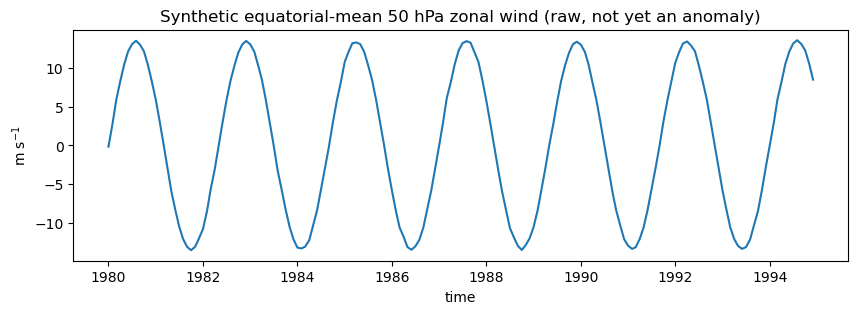
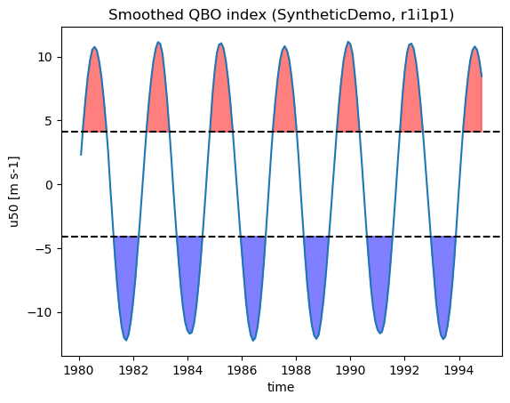
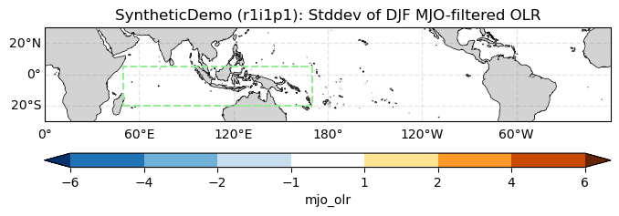

10. QBO-MJO
This notebook demonstrates the public, xarray-Dataset-in API for the QBO-MJO metric: pcmdi_metrics.qbo.compute_qbo_mjo_metrics (available in PMP v4.2 or higher).
The QBO-MJO metric quantifies how Madden-Julian Oscillation (MJO) activity in outgoing longwave radiation (OLR) differs between the easterly and westerly phases of the stratospheric Quasi-Biennial Oscillation (QBO), following:
Kim, H., Kim, D., Lee, M.-I., and Zhao, J., 2020: Impact of the QBO on MJO prediction skill in the subseasonal-to-seasonal (S2S) prediction models. J. Climate, 33, 4141-4155.
Son, S.-W., Y. Lim, C. Yoo, H. H. Hendon, and J. Kim, 2017: Stratospheric control of the Madden-Julian oscillation. J. Climate, 30, 1909-1922.
The metric is computed in two stages:
A QBO phase index is built from monthly 50 hPa equatorial (10S-10N) zonal wind: deseasonalized anomalies are averaged over 10S-10N and all longitudes, smoothed with a 3-month running mean, and averaged over DJF each year. Years are classified as QBO-easterly or QBO-westerly when this DJF index falls below/above +/-0.5 standard deviations.
MJO activity is measured as the DJF standard deviation of Kelvin/MJO-band-filtered daily OLR (Wheeler-Kiladis filtering, following Wheeler and Kiladis, 1999), averaged over the Maritime Continent (50E-170E, 20S-5N), and compared between the QBO-easterly and QBO-westerly composite years.
Unlike most other PMP demo notebooks, this one does not use the standard downloaded demo dataset – the standard PMP demo bundle (see Demo 0) only contains climatological-mean fields, while this metric needs multi-decade monthly stratospheric wind and daily OLR time series. Instead, this notebook builds small illustrative synthetic Datasets purely to demonstrate the API’s shape and outputs. Section 4 below shows how to point the same code at real data.
The implementation of this metric in PMP was completed by Jiwoo Lee (LLNL) in collaboration with Julie Caron (NCAR). Kristin Chang (LLNL) contributed through code review and development of interactive graphics for the CMIP5 and CMIP6 applications.
[1]:
import json
import matplotlib.pyplot as plt
import numpy as np
import pandas as pd
import xarray as xr
import xcdat as xc # noqa: F401 (registers the .bounds/.temporal/.spatial accessors)
%matplotlib inline
1. Build illustrative synthetic input data
The API needs two Datasets, already on a common grid and time-decoded:
a monthly Dataset with a zonal wind variable (e.g.
"u50"or"ua") on a(time, lat, lon)grid, already reduced to 50 hPa if it started out with a vertical level dimensiona daily Dataset with an OLR variable (e.g.
"olr"or"rlut") on a(time, lat, lon)grid
Below, we fabricate both: a clean ~28-month sinusoidal oscillation in the wind field (a stylized QBO), and an eastward-propagating wavenumber-2 disturbance in the OLR field (a stylized MJO), plus noise. This is not real QBO/MJO data – it exists only to exercise the API end-to-end. In particular, nothing here ties the OLR disturbance’s amplitude to the QBO phase, so we should expect mjo_activity_diff (Section 2) to come out close to zero, unlike with real data.
[2]:
def make_synthetic_u50(
start="1980-01-01", end="1994-12-01", qbo_period_months=28, amplitude=15.0, seed=0
):
"""Fabricate a monthly 50 hPa zonal-wind Dataset with a QBO-like oscillation."""
rng = np.random.default_rng(seed)
time = pd.date_range(start=start, end=end, freq="MS")
lat = np.arange(-20, 20.1, 2.5)
lon = np.arange(0, 360, 10.0)
t_months = np.arange(len(time))
qbo_signal = amplitude * np.sin(2 * np.pi * t_months / qbo_period_months)
# taper the equatorial QBO signal to ~0 by +/-15 degrees latitude
lat_taper = np.clip(1 - np.abs(lat) / 15, 0, 1) ** 0.5
u = (
qbo_signal[:, None, None] * lat_taper[None, :, None]
+ rng.normal(scale=1.5, size=(len(time), len(lat), len(lon)))
)
ds = xr.Dataset(
{"u50": (("time", "lat", "lon"), u.astype("float32"))},
coords={"time": time, "lat": lat, "lon": lon},
)
ds["lat"].attrs["units"] = "degrees_north"
ds["lon"].attrs["units"] = "degrees_east"
ds["u50"].attrs["units"] = "m s-1"
return ds.bounds.add_missing_bounds()
def make_synthetic_olr(
start="1980-01-01",
end="1994-12-31",
mjo_period_days=45,
wavenumber=2,
amplitude=8.0,
seed=1,
):
"""Fabricate a daily OLR Dataset with an eastward-propagating MJO-like wave."""
rng = np.random.default_rng(seed)
time = pd.date_range(start=start, end=end, freq="D")
lat = np.arange(-30, 30.1, 2.5)
lon = np.arange(0, 360, 10.0)
t_days = np.arange(len(time))
phase = 2 * np.pi * (t_days[:, None] / mjo_period_days - wavenumber * lon[None, :] / 360.0)
mjo_wave = amplitude * np.sin(phase) # shape (time, lon): eastward propagating
lat_taper = np.exp(-((lat / 15.0) ** 2)) # confined near the equator
olr = (
230.0 # a typical tropical-convection OLR value, W m-2
+ mjo_wave[:, None, :] * lat_taper[None, :, None]
+ rng.normal(scale=5.0, size=(len(time), len(lat), len(lon)))
)
ds = xr.Dataset(
{"olr": (("time", "lat", "lon"), olr.astype("float32"))},
coords={"time": time, "lat": lat, "lon": lon},
)
ds["lat"].attrs["units"] = "degrees_north"
ds["lon"].attrs["units"] = "degrees_east"
ds["olr"].attrs["units"] = "W m-2"
return ds.bounds.add_missing_bounds()
ds_u = make_synthetic_u50()
ds_olr = make_synthetic_olr()
ds_u
[2]:
<xarray.Dataset> Size: 446kB
Dimensions: (time: 180, lat: 17, lon: 36, bnds: 2)
Coordinates:
* time (time) datetime64[us] 1kB 1980-01-01 1980-02-01 ... 1994-12-01
* lat (lat) float64 136B -20.0 -17.5 -15.0 -12.5 ... 15.0 17.5 20.0
* lon (lon) float64 288B 0.0 10.0 20.0 30.0 ... 320.0 330.0 340.0 350.0
Dimensions without coordinates: bnds
Data variables:
u50 (time, lat, lon) float32 441kB 0.1886 -0.1982 ... 1.592 1.716
lon_bnds (lon, bnds) float64 576B -5.0 5.0 5.0 15.0 ... 345.0 345.0 355.0
lat_bnds (lat, bnds) float64 272B -21.25 -18.75 -18.75 ... 18.75 21.25
time_bnds (time, bnds) datetime64[us] 3kB 1980-01-01 ... 1995-01-01[3]:
ds_olr
[3]:
<xarray.Dataset> Size: 20MB
Dimensions: (time: 5479, lat: 25, lon: 36, bnds: 2)
Coordinates:
* time (time) datetime64[us] 44kB 1980-01-01 1980-01-02 ... 1994-12-31
* lat (lat) float64 200B -30.0 -27.5 -25.0 -22.5 ... 25.0 27.5 30.0
* lon (lon) float64 288B 0.0 10.0 20.0 30.0 ... 320.0 330.0 340.0 350.0
Dimensions without coordinates: bnds
Data variables:
olr (time, lat, lon) float32 20MB 231.7 234.1 231.6 ... 232.4 230.1
lon_bnds (lon, bnds) float64 576B -5.0 5.0 5.0 15.0 ... 345.0 345.0 355.0
lat_bnds (lat, bnds) float64 400B -31.25 -28.75 -28.75 ... 28.75 31.25
time_bnds (time, bnds) datetime64[us] 88kB 1980-01-01 ... 1995-01-01A quick sanity-check plot of the raw (pre-anomaly) equatorial-mean synthetic wind confirms the fabricated oscillation looks like a QBO time-height… well, time series (no vertical dimension here, since this API takes an already-level-selected field):
[4]:
ds_u["u50"].sel(lat=slice(-5, 5)).mean(dim=["lat", "lon"]).plot(figsize=(10, 3))
plt.title("Synthetic equatorial-mean 50 hPa zonal wind (raw, not yet an anomaly)")
plt.ylabel("m s$^{-1}$")
plt.show()

2. Compute QBO-MJO metrics with the public API
compute_qbo_mjo_metrics is a pure function: it takes the two Datasets above plus a handful of parameters, and returns (output, diagnostics) with no file or plot I/O. This makes it suitable for notebooks, pipelines, and unit tests – contrast with process_qbo_mjo_metrics/qbo_mjo_driver.py (Section 4), which read from files on disk and always write NetCDF/PNG/JSON outputs.
Full parameter documentation: `pcmdi_metrics.qbo.compute_qbo_mjo_metrics <https://pcmdi.github.io/pcmdi_metrics/generated/pcmdi_metrics.qbo.compute_qbo_mjo_metrics.html>`__.
[5]:
from pcmdi_metrics.qbo import compute_qbo_mjo_metrics
output, diagnostics = compute_qbo_mjo_metrics(
ds_u,
ds_olr,
varname="u50",
varname2="olr",
start="1980-01",
end="1994-12",
taper_to_mean=True,
model="SyntheticDemo",
member="r1i1p1",
debug=False,
)
print(json.dumps(output, indent=2))
2026-08-03 12:02:36,927 [WARNING]: temporal.py(_set_data_var_attrs:997) >> 'time' does not have a calendar encoding attribute set, which is used to determine the `cftime.datetime` object type for the output time coordinates. Defaulting to CF 'standard' calendar. Otherwise, set the calendar type (e.g., ds['time'].encoding['calendar'] = 'noleap') and try again.
2026-08-03 12:02:36,930 [WARNING]: temporal.py(_set_data_var_attrs:997) >> 'time' does not have a calendar encoding attribute set, which is used to determine the `cftime.datetime` object type for the output time coordinates. Defaulting to CF 'standard' calendar. Otherwise, set the calendar type (e.g., ds['time'].encoding['calendar'] = 'noleap') and try again.
2026-08-03 12:02:37,001 [WARNING]: temporal.py(_set_data_var_attrs:997) >> 'time' does not have a calendar encoding attribute set, which is used to determine the `cftime.datetime` object type for the output time coordinates. Defaulting to CF 'standard' calendar. Otherwise, set the calendar type (e.g., ds['time'].encoding['calendar'] = 'noleap') and try again.
sd of entire qbo index - smoothed u50 anomalies averaged 10s-10n and all lons
8.190154830389789
qbo_phase, qbo_phase_year_list: east [1981, 1983, 1985, 1988, 1990, 1992]
qbo_phase, qbo_phase_year_list: west [1980, 1982, 1984, 1987, 1989, 1991]
metric1 (mjo_activity): 3.820834972837555
metric2 (mjo_activity_diff): -0.012398573705409296
{
"SyntheticDemo": {
"r1i1p1": {
"mjo_activity": 3.820834972837555,
"mjo_activity_diff": -0.012398573705409296,
"qbo_east_years": [
1981,
1983,
1985,
1988,
1990,
1992
],
"qbo_west_years": [
1980,
1982,
1984,
1987,
1989,
1991
]
}
}
}
/Users/lee1043/miniforge3/envs/pmp_devel_20260331/lib/python3.12/site-packages/pcmdi_metrics/qbo/lib/compute_qbo_mjo_metrics.py:294: FutureWarning: In a future version of xarray to_datetimeindex will default to returning a 'us'-resolution DatetimeIndex instead of a 'ns'-resolution DatetimeIndex. This warning can be silenced by explicitly passing the `time_unit` keyword argument.
t.year - 1 for t in qbo_phase_ds.indexes["time"].to_datetimeindex()
/Users/lee1043/miniforge3/envs/pmp_devel_20260331/lib/python3.12/site-packages/pcmdi_metrics/qbo/lib/compute_qbo_mjo_metrics.py:294: FutureWarning: In a future version of xarray to_datetimeindex will default to returning a 'us'-resolution DatetimeIndex instead of a 'ns'-resolution DatetimeIndex. This warning can be silenced by explicitly passing the `time_unit` keyword argument.
t.year - 1 for t in qbo_phase_ds.indexes["time"].to_datetimeindex()
output is keyed by model then member, and contains:
``mjo_activity``: DJF standard deviation of Kelvin/MJO-filtered OLR, averaged over the Maritime Continent (50E-170E, 20S-5N) – the overall MJO activity level.
``mjo_activity_diff``: the same quantity, but composited over QBO-easterly DJF seasons minus QBO-westerly DJF seasons – the QBO-MJO teleconnection signal. With real data this is typically positive (more MJO activity during QBO-easterly winters); with our synthetic data, which has no such relationship built in, it should come out close to zero.
``qbo_east_years`` / ``qbo_west_years``: the December years classified as QBO-easterly/-westerly DJF seasons, used to build the composites above.
diagnostics carries the intermediate xarray objects behind those numbers, so you can inspect or re-plot anything without recomputing:
[6]:
list(diagnostics.keys())
[6]:
['std',
'u_index',
'u_index_smoothed',
'u_index_smoothed_djf',
'olr_region',
'olr_std_map',
'olr_std_map_phase',
'olr_std_map_diff']
3. Inspect and plot the diagnostics
pcmdi_metrics.qbo.lib also exposes the same plotting helpers process_qbo_mjo_metrics uses internally, so you can reuse them directly on the diagnostics returned above.
[7]:
from pcmdi_metrics.qbo.lib import diag_plot, test_plot_time_series
test_plot_time_series(
diagnostics["u_index_smoothed"]["u50"],
output_file=None,
std=diagnostics["std"],
title="Smoothed QBO index (SyntheticDemo, r1i1p1)",
)

The QBO east/west composite years (shaded above) are exactly output["SyntheticDemo"]["r1i1p1"]["qbo_east_years"] / ["qbo_west_years"].
The main diagnostic figure – grey contours of overall DJF MJO-filtered OLR activity, with the QBO east-minus-west difference filled in color over the Maritime Continent box used for mjo_activity_diff – is reproduced with diag_plot:
[8]:
diag_plot(
diagnostics["olr_std_map"],
diagnostics["olr_std_map_diff"],
fig_title="SyntheticDemo (r1i1p1): Stddev of DJF MJO-filtered OLR",
output_file=None,
sub_region=(50, 170, -20, 5),
)
/Users/lee1043/miniforge3/envs/pmp_devel_20260331/lib/python3.12/site-packages/cartopy/io/__init__.py:242: DownloadWarning: Downloading: https://naturalearth.s3.amazonaws.com/50m_physical/ne_50m_land.zip
warnings.warn(f'Downloading: {url}', DownloadWarning)

4. Using real data
For an actual science analysis, use one of the file-path-based entry points instead of fabricating data:
``pcmdi_metrics.qbo.process_qbo_mjo_metrics(params)`` – runs the same computation as above for a single model/member, but starting from NetCDF file paths: it loads (and optionally regrids) the inputs, calls
compute_qbo_mjo_metrics, and writes the NetCDF/PNG/JSON diagnostic files. This is the function to call directly if you already have au50/uafile and anolr/rlutfile in hand.``qbo_mjo_driver.py`` (
pcmdi_metrics/qbo/qbo_mjo_driver.py) – a batch driver that searches a model archive (viaxsearch) for all matching models/members, and callsprocess_qbo_mjo_metricsonce per model/member. This is the entry point used for full multi-model QBO-MJO assessments, and is not run from this notebook since it depends on a local ESGF-style data archive.
The parameter dictionary process_qbo_mjo_metrics expects looks like this (not executed here, since these example paths are specific to the original development machine):
params = {
"model": "ERA5",
"exp": None,
"member": None,
"input_file": "/path/to/ERA5_u50_monthly_1979-2021.nc",
"input_file2": "/path/to/ERA5_olr_daily_40s40n_1979-2021.nc",
"varname": "u50",
"level": None, # hPa; set to e.g. 50 if input_file has a plev dimension
"varname2": "olr",
"start": "1979-01",
"end": "2010-12",
"regrid": True,
"regrid_tool": "xesmf",
"target_grid": "2x2",
"taper_to_mean": True,
"output_dir": "./output_data",
"debug": False,
}
from pcmdi_metrics.qbo import process_qbo_mjo_metrics
output = process_qbo_mjo_metrics(params)
Required real inputs are a multi-decade monthly zonal wind record at 50 hPa (e.g. ERA5 or a CMIP ua file) and a multi-decade daily OLR record (e.g. NOAA interpolated OLR or a CMIP rlut file); both need to span the same DJF seasons so the QBO phase composites in Section 2/3 have OLR data to composite over.
For CMIP5 and CMIP6 model evaluation results using this metric, see https://pcmdi.llnl.gov/research/metrics/qbo/.